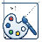

圖片裁切工具
完整功能
點擊、拖放或 Ctrl+V 貼上圖片
裁切
結果
輸出:
1280×800
×
鎖定比例
1280×800
▼
自訂尺寸
×
套用
自由裁切
1280×800 (16:10)
1920×1080 (16:9)
1600×1200 (4:3)
1080×1080 (1:1)
1800×1200 (3:2)
1200×1800 (2:3)
1080×1920 (9:16)
重新選擇
完成裁切
×
拖曳圖片到其他應用程式
PNG
JPEG
WebP
下載
需要編輯圖片？
開啟網頁版
使用完整功能